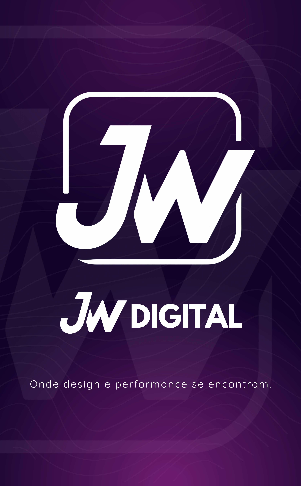

Técnico em Informática e Bacharelando em Sistemas de Informação
Atualmente curso Bacharelado na UNIDESC e possuo experiência prática em desenvolvimento web, banco de dados e automação.
Meu foco é criar soluções tecnológicas que otimizam processos e melhoram a eficiência no dia a dia da gestão pública, unindo desenvolvimento e pensamento visual.
Adasa
Jun 2025 - Presente
Escola Hélio Jones Branquinho
Ago 2024 - Dez 2024
Prefeitura de Luziânia
Ago 2023 - Jan 2024
UNIDESC
Jan 2024 - Presente
Conclusão prevista: 2027
Instituto Federal de Goiás
2021 - 2023
Desenvolvimento Web
HTML, CSS, JavaScript (2022)
Programação em Java
(2022)
Design Gráfico
(2022)
Curso de Inglês
(2019 – 2021)
Uma seleção de artes criadas por mim para divulgação digital, identidade visual, materiais promocionais e vídeos.
